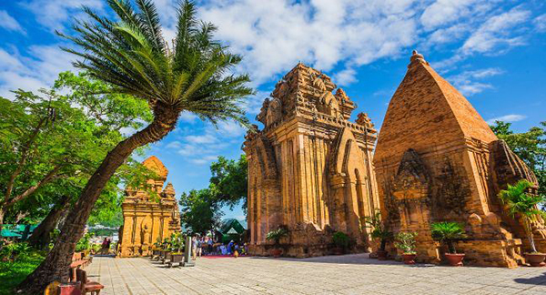

Địa điểm du lịch khi đến với Khánh Hòa
- Khu du lịch Vinpearl Land
- Đảo Hòn Mun
- Viện Hải Dương Học Nha Trang
- Nhà Thờ Đá Nha Trang
- Bãi biển Đại Lãnh
- Hòn Chồng – Hòn Vợ
- Khu du lịch Dốc Lết
- Tháp Bà Po Nagar
- Thác Yangbay
Đến với Nha Trang không ai không biết Vinpearl Land, tọa lạc trên đảo Hòn Tre
đây chắc chắn là địa điểm du lịch Khánh Hòa vô cùng hấp dẫn nổi tiếng tại Nha Trang. Ngoài việc hút khách bởi bãi biển cát trắng mịn tuyệt đẹp của mình, khách sạn sang trọng,…
Những trò chơi cảm giác mạnh và rạp chiếu phim 4D cũng mang lại cho du khách kỷ niệm thú vị khi đến với Vinpearl Land.

Đây được xem là nơi có sinh học biển đa dạng nhất nhì Việt Nam. Ngoài việc thu hút bởi bãi tắm trong vắt, xanh ngắt vách đá cheo leo, hoang sơ, bãi biển tuyệt đẹp mà còn
thu hút du khách bơi quán bar trên mặt biển, những dịch vụ thám hiểm lòng biển bằng tàu đá kín hay dịch vụ lặn biển khám phá rạn san hô đẹp lộng lẫy.

Nằm tại số 1, Cầu Đá, Tp Nha Trang, tỉnh Khánh Hòa. Viện Hải Dương Học được xây dựng năm 1923 bởi người Pháp với diện tích lên đến 20ha gần
vùng biển sâu thuận lợi để nghiên cứu các loài sinh vật biển. Loài cá Mao Tiên cực độc là biểu tượng của Viện Hải dương học Nha Trang.
Với 20.000 mẫu vật của hơn 4000 loài sinh vật biển cũng như nước ngọt được gìn giữ nhiều năm nay du khách tha hồ tham quan khi đến đây.
Ngoài ra nơi đây còn có bộ xương cá voi dài gần 26m cao đến 3m được biết con cá này có cách đây hơn 200 năm.
Tên gọi chính thức của nhà thờ này là Nhà thờ Chánh tòa Kitô Vua, người dân sống trong vùng thường gọi là nhà thờ đá,
nhà thờ Nha Trang hay nhà thờ Ngã Sáu. Nhà thờ Núi là tên gọi phổ biến tại đây.
Là một trong những kiến trúc mang đậm phong cách Pháp nằm ở độ cao 12m giữa trung tâm thành phố.
Thuộc địa phận của huyện Vạn Ninh, tỉnh Khánh Hòa lại nằm bên quốc lộ 1A cách Nha Trang 80km về hướng Bắc.
Đây là một trong những bãi biển đẹp nhất miền Trung với hàng phi lao chạy dài theo dải cát trắng mịn.
Nằm ngay trong thành phố Nha Trang thuộc phường Vĩnh Phước. Nơi đây chính là quần thể khối đá lớn với nhiều loại hình thù xếp chồng lên nhau
từ bờ cao xuống biển tựa như bàn tay khổng lồ nào xếp đặt. Nằm dưới chân đồi phía Đông có nhóm đá khác nhỏ hơn chính là Hòn Vợ.

Thuộc địa phận bờ biển huyện Ninh Hòa nằm cách Nha Trang 50km về phía Bắc.
Cái tên gọi Dốc Lết được bắt nguồn từ địa thế nơi đây gồm những cồn cát trắng tinh chạy dài với chiều cao lên đến hàng chục mét trên hàng dương, ngăn đất liền với biển.
Muốn di chuyển ra biển du khách chỉ có cách vượt qua cồn cát này, vượt qua khỏi cồn cát này du khách sẽ đặt chân lên một bãi biển tuyệt vời với bờ cát trắng mịn.
Ngoài khu du lịch bờ biển du khách có thể đi thăm các làng chài, đồng muối Hòn Khói, vùng Hòn Hèo khi đến với Dốc Lết.

Đây được xem như một công trình kiến trúc tuyệt đẹp mang tính lịch sử văn minh của dân tộc Chăm. Nằm cách trung tâm thành phố 2km,
điều đặc biệt là Tháp Bà Po Nagar vẫn duy trì các hoạt động tín ngưỡng sẽ thích hợp với các du khách muốn tìm hiểu văn hóa Chăm.
Thuộc xã Khánh Phú, huyện Khánh Vĩnh, tỉnh Khánh Hòa, Việt Nam. Nằm cách thành phố Nha Trang 45km với độ cao 100m với nước biển,
Thác Yang Bay bắt nguồn từ đỉnh GiaKang với độ cao 900m.